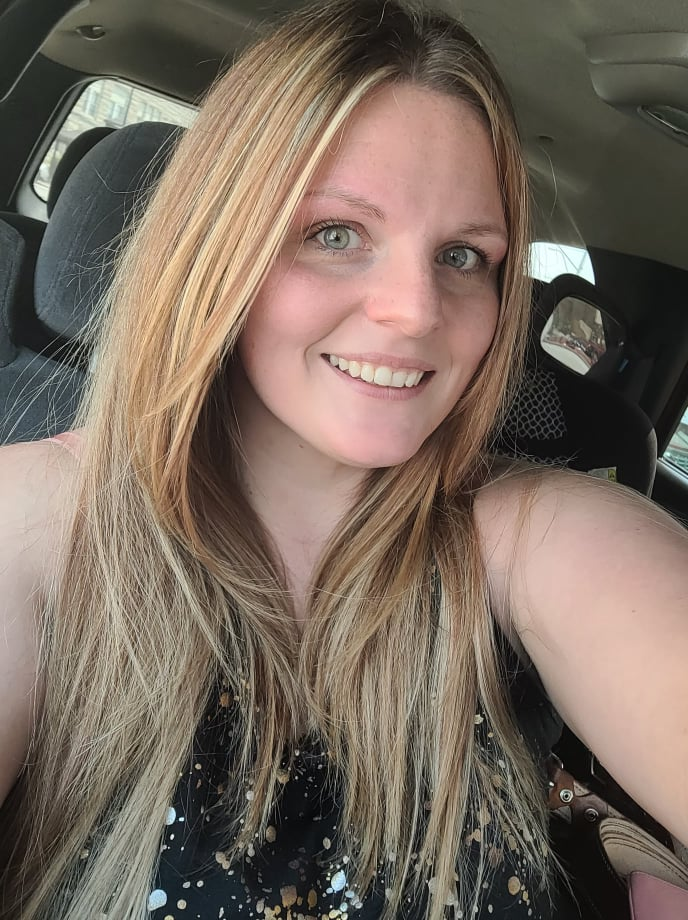

Cara Jones
A little about me
I'm a wife and mother of three. Most of my time is spent with my family. We love to travel, have gamecube and movie nights, swim, camp, and find new adventures. I've spent most of my career in food service. I've been an Assistant Manager at McDonalds, Casey's, Pizza Hut and a local resturant, The Mediterranean. I've always loved computers and I'm thrilled to be following those passions.